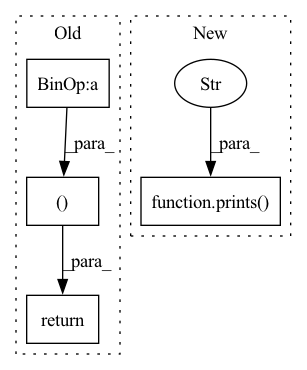

Pattern ID :5837

Before Change
print(f"Validate Confidence : {self.validate_confidence():.3f}")
if self.clean_acc - clean_acc > 3 and self.clean_acc > 40:
target_acc = 0.0
return clean_loss + target_loss, target_acc, clean_acc
def get_filename(self, mark_alpha: float = None, target_class: int = None, **kwargs):
if mark_alpha is None:
mark_alpha = self.mark.mark_alpha
After Change
get_data_fn=self.get_poison_data, strip=True, poison_label=False,
indent=indent, **kwargs)
prints(f"Validate Confidence: {self.validate_confidence():.3f}", indent=indent)
prints(f"Neuron Jaccard Idx: {self.check_neuron_jaccard():.3f}", indent=indent)
if self.clean_acc - clean_acc > 3 and self.clean_acc > 40: // TODO: better not hardcoded
target_acc = 0.0
return clean_acc, target_acc
In pattern: SUPERPATTERN
Frequency: 4
Non-data size: 4
Instances
Fragment ID: 20519553
Project Name: ain-soph/trojanzoo
Commit Name: deb60f8b62a64e1d605119804fe8cedc7d6ba165
Time: 2021-01-11
Author: ain-soph@live.com
File Name: trojanvision/attacks/backdoor/imc_adaptive.py
M Class Name: IMC_Adaptive
N Class Name: IMC_Adaptive
M Method Name: validate_fn(5)
N Method Name: validate_fn(3)
M Parent Class: IMC
N Parent Class: IMC
M File Name: trojanvision/attacks/backdoor/imc_adaptive.py
N File Name: trojanvision/attacks/backdoor/imc_adaptive.py
M Start Line: 222
M End Line: 236
N Start Line: 225
N End Line: 245
'>
Before Change
print(f"Validate Confidence : {self.validate_confidence():.3f}")
if self.clean_acc - clean_acc > 3 and self.clean_acc > 40:
target_acc = 0.0
return clean_loss + target_loss, target_acc, clean_acc
After Change
get_data_fn=self.get_poison_data, strip=True, poison_label=False,
indent=indent, **kwargs)
prints(f"Validate Confidence: {self.validate_confidence():.3f}", indent=indent)
prints(f"Neuron Jaccard Idx: {self.check_neuron_jaccard():.3f}", indent=indent)
if self.clean_acc - clean_acc > 3 and self.clean_acc > 40: // TODO: better not hardcoded
target_acc = 0.0
return clean_acc, target_acc
'>
Fragment ID: 20519552
Project Name: ain-soph/trojanzoo
Commit Name: deb60f8b62a64e1d605119804fe8cedc7d6ba165
Time: 2021-01-11
Author: ain-soph@live.com
File Name: trojanvision/attacks/backdoor/imc_strip.py
M Class Name: IMC_STRIP
N Class Name: IMC_STRIP
M Method Name: validate_fn(5)
N Method Name: validate_fn(3)
M Parent Class: IMC
N Parent Class: IMC
M File Name: trojanvision/attacks/backdoor/imc_strip.py
N File Name: trojanvision/attacks/backdoor/imc_strip.py
M Start Line: 60
M End Line: 74
N Start Line: 63
N End Line: 83
'>
Before Change
// todo: Return value
if self.clean_acc - clean_acc > 3 and self.clean_acc > 40:
target_acc = 0.0
return clean_loss + target_loss, target_acc, clean_acc
def loss(self, poison_imgs: torch.Tensor, source_feats: torch.Tensor) -> torch.Tensor:
poison_feats = self.model.get_layer(poison_imgs, layer_output=self.preprocess_layer)
return (poison_feats - source_feats).flatten(start_dim=1).norm(p=2, dim=1).mean()
After Change
get_data_fn=self.get_data, keep_org=False,
poison_label=False, training=False, indent=indent, **kwargs)
prints(f"Validate Confidence: {self.validate_confidence():.3f}", indent=indent)
prints(f"Neuron Jaccard Idx: {self.check_neuron_jaccard():.3f}", indent=indent)
if self.clean_acc - clean_acc > 3 and self.clean_acc > 40: // TODO: better not hardcoded
target_acc = 0.0
return clean_acc, target_acc
'>
Fragment ID: 20519555
Project Name: ain-soph/trojanzoo
Commit Name: deb60f8b62a64e1d605119804fe8cedc7d6ba165
Time: 2021-01-11
Author: ain-soph@live.com
File Name: trojanvision/attacks/backdoor/hidden_trigger.py
M Class Name: HiddenTrigger
N Class Name: HiddenTrigger
M Method Name: validate_fn(5)
N Method Name: validate_fn(3)
M Parent Class: BadNet
N Parent Class: BadNet
M File Name: trojanvision/attacks/backdoor/hidden_trigger.py
N File Name: trojanvision/attacks/backdoor/hidden_trigger.py
M Start Line: 85
M End Line: 95
N Start Line: 88
N End Line: 102
'>
Before Change
// todo: Return value
if self.clean_acc - clean_acc > 3 and self.clean_acc > 40:
target_acc = 0.0
return clean_loss + target_loss, target_acc, clean_acc
After Change
get_data_fn=self.get_data, keep_org=False, poison_label=False,
indent=indent, **kwargs)
prints(f"Validate Confidence: {self.validate_confidence():.3f}", indent=indent)
prints(f"Neuron Jaccard Idx: {self.check_neuron_jaccard():.3f}", indent=indent)
if self.clean_acc - clean_acc > 3 and self.clean_acc > 40: // TODO: better not hardcoded
target_acc = 0.0
return clean_acc, target_acc
'>
Fragment ID: 20519556
Project Name: ain-soph/trojanzoo
Commit Name: deb60f8b62a64e1d605119804fe8cedc7d6ba165
Time: 2021-01-11
Author: ain-soph@live.com
File Name: trojanvision/attacks/backdoor/trojannet.py
M Class Name: TrojanNet
N Class Name: TrojanNet
M Method Name: validate_fn(5)
N Method Name: validate_fn(3)
M Parent Class: BadNet
N Parent Class: BadNet
M File Name: trojanvision/attacks/backdoor/trojannet.py
N File Name: trojanvision/attacks/backdoor/trojannet.py
M Start Line: 99
M End Line: 110
N Start Line: 102
N End Line: 117